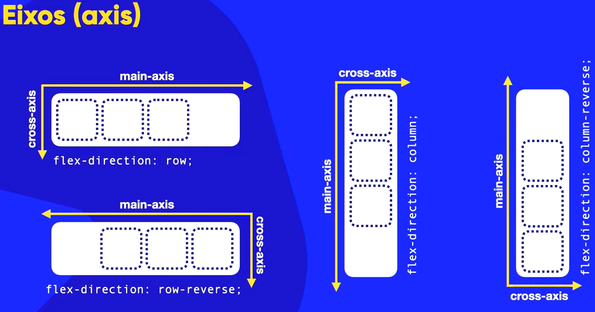
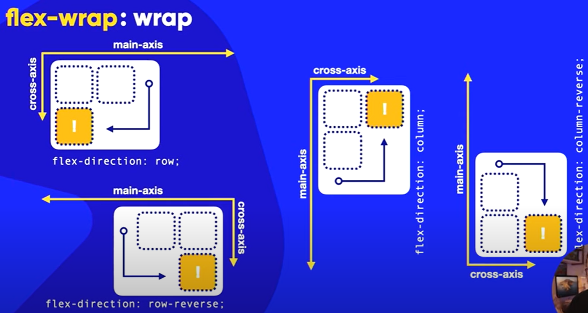
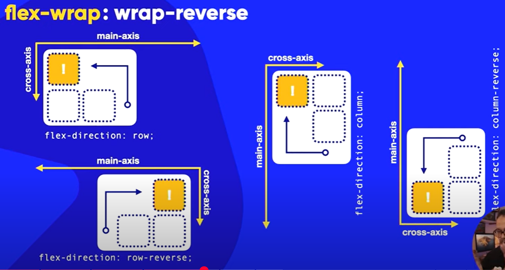
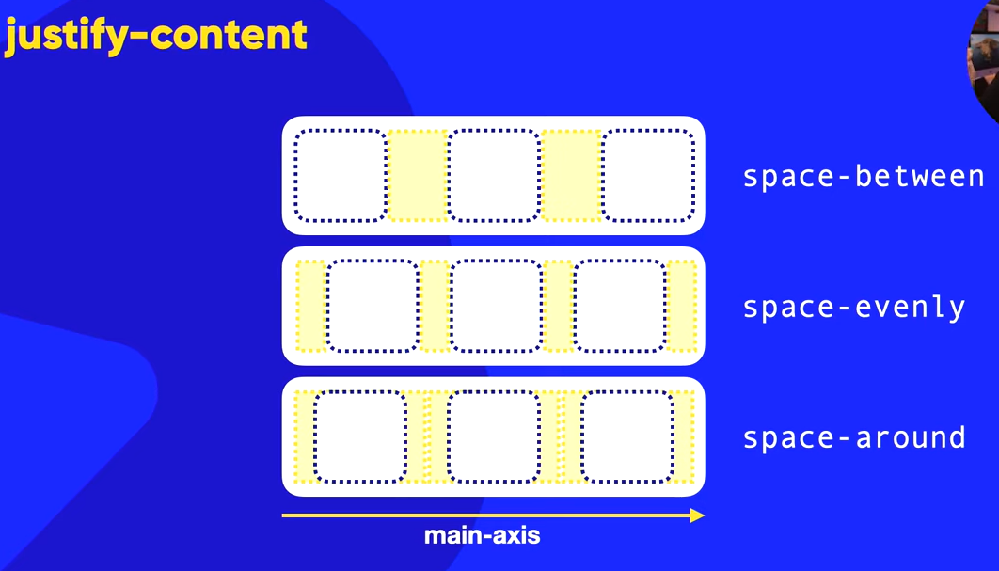
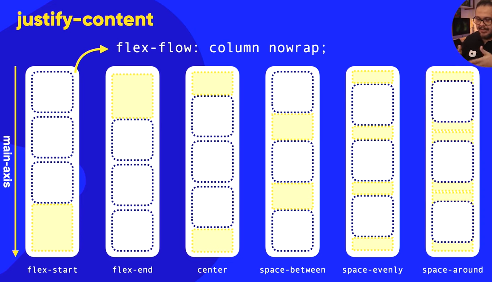

Tudo sobre Flexbox
Flexbox é um modelo de caixa flexível. Os elementos filhos do container são chamados de flex items e podem se adaptar ao espaço disponivel no elemento pai ou container.
Desta forma, podemos criar layouts de páginas com flexíveis e responsivos ao aplicar display flex no container (pai) e flex items no elemento filho (itens).
Propriedades do Flex Container
São aplicáveis somente ao container (pai) e não aos itens (filhos).
- display: flex;
- flex-direction: row - da esquerda para a direita
- flex-direction: row-reverse - da direita para a esquerda
- flex-direction: column - da cima para baixo
- flex-direction: column-reverse - da baixo para cima
Eixos (main axis e cross axis)
O eixo principal é o que define a direção do flex container. O eixo transversal é o que define a direção perpendicular ao eixo principal.
Para além disso, temos o main start e o main end que definem o inicio e o fim do eixo principal. E o cross start e o cross end que definem o inicio e o fim do eixo transversal.
Essas propriedades se alteram se eu aplicar o Reverso (flex-direction: row-reverse; ou flex-direction: column-reverse;), invertendo a direção do eixo principal e transversal.
Para exemplificar melhor, veja a imagem abaixo:

WRAP
A propriedade flex-wrap define se os flex items serão exibidos em uma ou mais linhas.
Ela pode ter 3 valores:
- flex-wrap: nowrap - os flex items não serão quebrados em linhas (ESTE É O VALOR PADRÃO) OU SEJA, SE O CONTAINER NÃO TIVER ESPAÇO SUFICIENTE, OS ITENS ULTRAPASSARÃO O CONTAINER ou serão espremidos
- flex-wrap: wrap - os flex items serão quebrados em linhas (OS ITENS SE QUEBRARÃO EM LINHAS SE O CONTAINER NÃO TIVER ESPAÇO SUFICIENTE) - Seguirão o cross axis
- flex-wrap: wrap-reverse - os flex items serão quebrados em linhas e a ordem será invertida (O PRIMEIRO ITEM SE TORNA O ÚLTIMO E O ÚLTIMO ITEM SE TORNA O PRIMEIRO) OU o ultimo item seguirá o Cross Axis de forma invertida
veja a imagem abaixo para entender melhor para onde os ultimos blocos seguem:
Caso eu use o flex wrap:

Caso eu use o flex wrap reverse:

FLEX-FLOW
A propriedade flex-flow é uma shorthand para as propriedades flex-direction e flex-wrap.
Ela pode ter a mistura de ambas as propriedades.
JUSTIFY-CONTENT
A propriedade justify-content define a posição dos flex items ao longo do eixo principal.
Ela pode ter 5 valores:
- justify-content: flex-start - os flex items serão alinhados ao inicio do eixo principal
- justify-content: flex-end - os flex items serão alinhados ao fim do eixo principal
- justify-content: center - os flex items serão alinhados ao centro do eixo principal
- justify-content: space-between - os flex items serão alinhados com espaço entre eles
- justify-content: space-around - os flex items serão alinhados com espaço entre eles e também ao redor deles
veja a imagem abaixo para entender melhor:

caso eu use o justify-content no modo column:

ALIGN-ITEMS
A propriedade align-items define a posição dos flex items ao longo do eixo transversal. Ela seguirá o eixo transversal do flex container.
Ela pode ter 5 valores:
- align-items: flex-start - os flex items serão alinhados ao inicio do eixo transversal
- align-items: flex-end - os flex items serão alinhados ao fim do eixo transversal
- align-items: center - os flex items serão alinhados ao centro do eixo transversal
- align-items: baseline - os flex items serão alinhados a base da linha do texto
- align-items: stretch - os flex items serão esticados para preencher o container - ESTE É O VALOR PADRÃO
veja a imagem abaixo para entender melhor:
Align-content
A propriedade align-content define a posição dos flex items (dentro do flex container) ao longo do eixo transversal.
Ela pode ter 5 valores:
- align-content: flex-start - os flex items serão alinhados ao inicio do eixo transversal
- align-content: flex-end - os flex items serão alinhados ao fim do eixo transversal
- align-content: center - os flex items serão alinhados ao centro do eixo transversal
- align-content: space-between - os flex items serão alinhados com espaço entre eles
- align-content: space-around - os flex items serão alinhados com espaço entre eles e também ao redor deles
- align-content: stretch - os flex items serão esticados para preencher o container - ESTE É O VALOR PADRÃO
- align-content: space-evenly - os flex items serão alinhados com espaço entre eles e também ao redor deles
Flex: auto
Flex: auto - o flex container será flexível e se adaptará ao conteúdo, ou seja, o item que quebrar para a proxima linha ocupará o espaço restante do container
Esta propriedade é aplicável somente no flex item (filho) e não no flex container (pai)
ALINHANDO CONTEÚDO
Para alinhar o conteúdo então consideramos o justify-content e o align-items.
Assim ajustamos em eixo x e eixo y.
Consideramos também o align-content para alinhar os flex items (dentro do flex container) ao longo do eixo transversal.